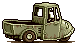
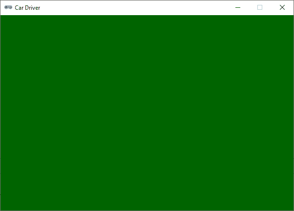

Car Actor#
Het autootje in Car Driver is een Actor.

Om te beginnen maken we een Actorvariabele car aan door de Actor constructor aan te roepen, waarbij we de naam van de sprite 'car_0' meegeven. Vervolgens geven we de Actor een beginpositie door de pos eigenschap in te stellen op een tuple met de x- en y-coördinaten. In dit geval plaatsen we het autootje in het midden van het venster, dus op de helft van de breedte en de hoogte.
1# WINDOW SETTINGS
2WIDTH = 600
3HEIGHT = 400
4TITLE = 'Car Driver'
5
6# ACTORS
7car = Actor('car_0')
8car.pos = (WIDTH // 2, HEIGHT // 2)
9
10################################
11# DRAW()
12################################
13def draw():
14 screen.fill('darkgreen')
15
16################################
17# UPDATE()
18################################
19def update():
20 pass
Om het autootje zichtbaar te maken, moeten we het tekenen in de draw() functie. Daarvoor roepen we de draw() methode van de Actor aan.
1# WINDOW SETTINGS
2WIDTH = 600
3HEIGHT = 400
4TITLE = 'Car Driver'
5
6# ACTORS
7car = Actor('car_0')
8car.pos = (WIDTH // 2, HEIGHT // 2)
9
10################################
11# DRAW()
12################################
13def draw():
14 screen.fill('darkgreen')
15 car.draw()
16
17################################
18# UPDATE()
19################################
20def update():
21 pass
Run de code om te controleren of het autootje in het midden van het venster verschijnt.
Besturing#
We willen het autootje kunnen besturen met de pijltjestoetsen. Dat kan op verschillende manieren die elk hun eigen voor- en nadelen hebben. In deze tutorial gebruiken we niet de eenvoudigste manier, maar een manier die goed werkt en die je hopelijk beter leert begrijpen hoe je handig gebruik kunt maken van de event handler functies van Pygame Zero. We gaan namelijk de on_key_down() en de on_key_up() functies gebruiken, die worden aangeroepen wanneer een toets wordt ingedrukt of losgelaten.
Voordat we de event handlers programmeren, voegen we eerst een drietal eigenschappen toe aan de car Actor om de rijsnelheid van het autootje en de verplaatsingen in de x- en y-richting bij te houden.
6# ACTORS
7car = Actor('car_0')
8car.pos = (WIDTH // 2, HEIGHT // 2)
9car.speed = 3
10car.dx = 0
11car.dy = 0
Nu kunnen we de event handlers maken. De on_key_down() functie ziet er zo uit:
6# ACTORS
7car = Actor('car_0')
8car.pos = (WIDTH // 2, HEIGHT // 2)
9car.speed = 3
10car.dx = 0
11car.dy = 0
12
13################################
14# EVENT HANDLERS
15################################
16def on_key_down(key):
17 if key == keys.LEFT:
18 car.dx -= car.speed
19 elif key == keys.RIGHT:
20 car.dx += car.speed
21 elif key == keys.UP:
22 car.dy -= car.speed
23 elif key == keys.DOWN:
24 car.dy += car.speed
25
26################################
27# DRAW()
28################################
De variabelen car.dx en car.dy staan eigenlijk voor de snelheid van het autootje in de x- en y-richting. Wanneer je op een pijltjestoets drukt, wordt de snelheid in de bijbehorende richting verhoogd of verlaagd. Als je bijvoorbeeld op de linkerpijltjestoets drukt, wordt car.dx met 3 verlaagd, waardoor het autootje naar links gaat bewegen.
Wanneer de linkerpijltjestoets wordt losgelaten, moeten we car.dx weer met 3 verhogen, zodat het autootje stopt met bewegen in de x-richting. De on_key_up() functie is dus een spiegelbeeld van de on_key_down() functie:
13################################
14# EVENT HANDLERS
15################################
16def on_key_down(key):
17 if key == keys.LEFT:
18 car.dx -= car.speed
19 elif key == keys.RIGHT:
20 car.dx += car.speed
21 elif key == keys.UP:
22 car.dy -= car.speed
23 elif key == keys.DOWN:
24 car.dy += car.speed
25
26def on_key_up(key):
27 if key == keys.LEFT:
28 car.dx += car.speed
29 elif key == keys.RIGHT:
30 car.dx -= car.speed
31 elif key == keys.UP:
32 car.dy += car.speed
33 elif key == keys.DOWN:
34 car.dy -= car.speed
Nu moeten we nog zorgen dat de snelheden car.dx en car.dy worden toegepast op de positie van het autootje. Dat doen we in de update() functie,waar we nu het keyword pass kunnen vervangen door echte code:
43################################
44# UPDATE()
45################################
46def update():
47 car.x += car.dx
48 car.y += car.dy
Run de code en controleer of je het autootje kunt besturen met de pijltjestoetsen. Test ook wat er gebeurt wanneer je twee pijltjestoetsen tegelijk indrukt en probeer te verklaren waarom dat gebeurt.
Flippen#
Wanneer je het autootje naar links laat bewegen, dan wil je dat het autootje ook daadwerkelijk naar links wijst. De pgzhelper module voegt de handige eigenschap flip_x toe aan de Actor klasse, waarmee je een sprite horizontaal kunt spiegelen. Deze eigenschap gebruiken we om het autootje te laten flippen wanneer het naar links beweegt.
We voegen helemaal bovenaan het codebestand de volgende importregel toe om de pgzhelper module te importeren:
1from pgzhelper import *
Daarna creëren we twee constanten om de richting van het autootje mee aan te geven, en we voegen een nieuwe eigenschap direction toe aan de car Actor om de huidige rijrichting bij te houden:
3# WINDOW SETTINGS
4WIDTH = 600
5HEIGHT = 400
6TITLE = 'Car Driver'
7
8# DIRECTION CONSTANTS
9LEFT = 1
10RIGHT = 2
11
12# ACTORS
13car = Actor('car_0')
14car.pos = (WIDTH // 2, HEIGHT // 2)
15car.speed = 3
16car.dx = 0
17car.dy = 0
18car.direction = RIGHT
Het wisselen van richting gebeurt in de event handler functies. Voeg de volgende regels toe aan de on_key_down() en on_key_up() functies:
20################################
21# EVENT HANDLERS
22################################
23def on_key_down(key):
24 if key == keys.LEFT:
25 car.dx -= car.speed
26 if car.dx < 0:
27 car.direction = LEFT
28 elif key == keys.RIGHT:
29 car.dx += car.speed
30 if car.dx > 0:
31 car.direction = RIGHT
32 elif key == keys.UP:
33 car.dy -= car.speed
34 elif key == keys.DOWN:
35 car.dy += car.speed
36
37def on_key_up(key):
38 if key == keys.LEFT:
39 car.dx += car.speed
40 if car.dx > 0:
41 car.direction = RIGHT
42 elif key == keys.RIGHT:
43 car.dx -= car.speed
44 if car.dx < 0:
45 car.direction = LEFT
46 elif key == keys.UP:
47 car.dy += car.speed
48 elif key == keys.DOWN:
49 car.dy -= car.speed
Begrijp je hoe deze toevoegingen werken? De richting van het autootje zou van rechts naar links kunnen veranderen wanneer je op de linkerpijltjestoets drukt, maar ook wanneer de rechterpijltjestoets wordt losgelaten terwijl de linkerpijltjestoets nog steeds ingedrukt is. Dus zowel de on_key_down() als de on_key_up() event handler krijgen een if statement om te checken of car.dx negatief is en zonodig de richting op LEFT te zetten. Op een soortgelijke manier wordt de richting op RIGHT gezet wanneer dat nodig is.
Nu hoeven we enkel nog de flip_x eigenschap van de Actor in te stellen op basis van de huidige richting. Dat doen we in de draw() functie:
51################################
52# DRAW()
53################################
54def draw():
55 screen.fill('darkgreen')
56 car.flip_x = (car.direction == LEFT)
57 car.draw()
Als car.direction == LEFT naar True evalueert, dan krijgt car.flip_x ook die waarde True, waardoor de sprite horizontaal gespiegeld wordt. En als car.direction == LEFT de waarde False oplevert, dan krijgt car.flip_x die waarde False, waardoor de sprite in zijn normale staat blijft. Vind je regel 56 lastig te begrijpen, dan zou je het ook als volgt kunnen programmeren:
51################################
52# DRAW()
53################################
54def draw():
55 screen.fill('darkgreen')
56 if car.direction == LEFT:
57 car.flip_x = True
58 else:
59 car.flip_x = False
60 car.draw()
Maar hoe minder regels code, hoe beter, dus de eerste versie is eigenlijk het mooist.
Test de code om te zien of het autootje nu ook daadwerkelijk flipt wanneer je van richting verandert.
Animatie#
In de images map van dit project heb je vijf verschillende sprites geplaatst van het autootje, telkens in een iets andere houding. Door deze sprites snel achter elkaar te tonen, kunnen we een animatie-effect creëren waardoor het autootje lijkt te wiebelen terwijl het rijdt.
Voor de animatie is het nodig dat we een lijst maken met de namen van de sprites die we willen gebruiken. Deze lijst geven we als waarde aan de eigenschap images van de Actor.
12# ACTORS
13car_images = ['car_0', 'car_1', 'car_2', 'car_3', 'car_4']
14car = Actor(car_images[0])
15car.images = car_images
16car.fps = 15
17car.pos = (WIDTH // 2, HEIGHT // 2)
18car.speed = 3
19car.dx = 0
20car.dy = 0
21car.direction = RIGHT
In regel 13 maken we de lijst car_images aan met de namen van de sprites. In regel 14 maken we de Actor aan met als beginbeeld de eerste sprite in de lijst (het eerste item in een lijst heeft index 0). In regel 15 kennen we de lijst car_images toe aan de eigenschap images van de Actor, zodat de Actor weet welke sprites hij moet gebruiken voor de animatie. Tenslotte stellen we in regel 16 in dat de animatie met 15 frames per seconde moet worden afgespeeld.
In de update() functie moeten we nu nog de animate() methode van de Actor aanroepen om de animatie te laten lopen.
62################################
63# UPDATE()
64################################
65def update():
66 car.x += car.dx
67 car.y += car.dy
68 car.animate()
Als je nu de code runt, zou je moeten zien dat het autootje wiebelt. Echter, het wiebelt nu de hele tijd, ook wanneer het stilstaat. Dat is niet wat we willen. Het autootje moet alleen wiebelen wanneer het rijdt. Om dat te bereiken, moeten we de animate() methode alleen aanroepen wanneer car.dx of car.dy niet gelijk is aan 0. Dat kan met een eenvoudig if statement:
62################################
63# UPDATE()
64################################
65def update():
66 car.x += car.dx
67 car.y += car.dy
68 if car.dx != 0 or car.dy != 0:
69 car.animate()
Met nog geen 70 regels code hebben we nu een rijdend autootje gemaakt dat met de pijltjestoetsen bestuurd kan worden, dat van richting verandert wanneer je van rijrichting wisselt, en dat een leuke wiebelende animatie heeft terwijl het rijdt. Mooi werk!
